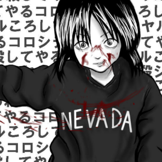
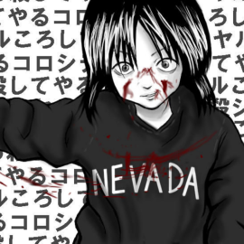

Escrito por Bruna Santos
Última autualização feita em 11/02/22
• O meme da Nevada-tan •
O meme que surgiu em 2004 que ficou popular no imageboard japonês chan. O meme é uma personagem chamada Nevada-tan cujo foi baseada em Natsumi Tsuji.
No início do caso permaneceu em segredo de justiça, devido a uma lei japonesa que não permite a divulgação dos nomes de infratores menores de idade. Entretanto, acidentalmente veio a vazar na internet.
Natsumi, uma garota que na época tinha 11 anos,havia assassinado sua colega de classe, Satomi Mitarai. O homicídio ocorreu no dia 1° de junho de 2004,na escola onde Natsumi estudava. Natsumi assassinou Satomi com um estilete quando estava sozinha com ela.
As duas garotas eram muito amigas, mas então porque uma chegaria ao ponto de assassinar a outra? O que motivaria uma criança a cometer um crime tão cruel?
Naquele dia, Nevada-tan “Natsumi” estava levando para a escola um estilete. No horário do almoço ela persuadiu Satomi Mitarai a entrar em uma sala de aula que estava vazia naquele momento, e em seguida fechou as cortinas.
Primeiramente ela disse que queria lhe ensinar um novo jogo. Então mandou Satomi sentar em uma cadeira e tirou seus óculos. Ela lhe disse que ia morrer, mesmo assim, Satomi não fugiu. Afinal de contas, ela acreditava se tratar de um jogo.
Natsumi disse que ela não poderia olhar, então cobriu os olhos de sua amiga com uma de suas mãos e, com a outra, puxou o estilete que havia levado para a escola e cortou profundamente o pescoço da vítima.
Agora com a garganta cortada, Satomi não conseguia gritar para pedir ajuda e era incapaz de se defender. Natsumi continuou o ataque, dessa vez lhe cortando o pulso. A vítima caiu no chão da sala de aula, agonizando em silêncio total. Nevada-tan ficou assistindo sua colega sangrar até a morte.
Depois disso, Nevada-tan deixou a sala de aula onde correu o assassinato e sem demonstrar remorso algum, se dirigiu para a sala de aula onde estava a professora, caminhando pelos corredores da escola coberta de sangue
A professora, que já havia notado que as duas garotas estavam desaparecidas, entrou em pânico. Ela pensou que Nevada-tan acidentalmente havia se cortado, até a garota dizer “esse não é meu sangue”. Ela saiu correndo para encontrar Satomi. Nevada-tan seguiu atrás dela, chorando e repetindo: “Eu fiz algo errado”.
A escola chamou uma ambulância, a polícia e os pais da vítima com o alerta de que sua filha estava “machucada”, mas na verdade ela já estava morta.
Quando a ambulância chegou, Satomi Mitarai já tinha morrido pela alta quantidade de sangue perdido, seus pais chegaram logo depois. Nevada-tan repetidamente se desculpava pelo o que havia feito.
Quando a polícia chegou, Natsumi confessou o crime, e em seguida disse que estava planejando o ato há quatro dias. Na delegacia, ela mostrou algum remorso: “Eu fiz algo errado, não fiz? Desculpa, desculpa mesmo“, ela falava enquanto chorava.
Por restrições da sua mãe quanto a outras tarefas, Natsumi começou a utilizar mais o computador, onde tornou-se fã de animes e conheceu o filme japonês Battle Royale. A garota rapidamente se identificou com as cenas de violências que nele ocorrem.
Battle Royale é um filme que trata sobre uma sociedade futurista na qual 42 estudantes são enviados para uma ilha deserta onde tem que sobreviver matando-se uns aos outros.
Posteriormente, Satomi e Nevada-tan tiveram uma discussão. Como forma de vingança, Satomi publicou no site da amiga dizendo que ela era “gorda” e “pretensiosa”. Natsumi ficou muito brava e exigiu que a amiga pedisse desculpas.
Satomi se negou a pedir desculpas, e isso foi alimentando a raiva de Nevada-tan até resultar no assassinato da amiga.
Por fim, pode-se concluir que o assassinato ocorreu por motivo fútil. Nevada-tan já tinha traços de uma pessoa problemática, e isso veio a se confirmar no reformatório onde ficou nos anos seguintes.
No dia 15 de setembro de 2004, a corte japonesa decidiu institucionalizar a menina por causa da gravidade do crime. Ela foi enviada a um reformatório onde ficaria, ao total, sob observação durante os 9 anos seguintes. A ideia era uma pena menor, porém Nevada-tan não demonstrava evolução.
Após dois anos no reformatório, em setembro de 2006, a corte decidiu prolongar esse período por mais dois anos. Eles queriam continuar sua avaliação psicológica, pois pelo seu comportamento estranho, acreditavam que a menina ainda poderia apresentar perigo para a sociedade.
Em 29 de maio de 2008, lhe foi concedida a prisão domiciliar. O tribunal japonês disse que ela tinha desenvolvido as habilidades necessárias para interagir com outras pessoas e as autoridades afirmaram que não estavam buscando uma sentença adicional.
Em 2013, aos 20 anos de idade, ela foi liberada pela justiça, com sua pena totalmente cumprida. Sua família mudou-se para um local desconhecido.
Eventualmente a apelidaram de “Nevada-tan”. “Nevada” por causa do moletom escrito “Nevada” que usava durante o homicídio. E “-tan” sendo a maneira como uma criança pronunciaria o honorífico “-chan”.
 
